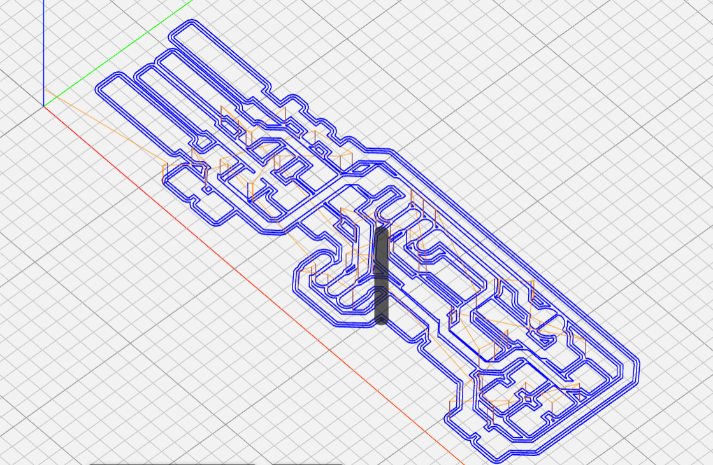
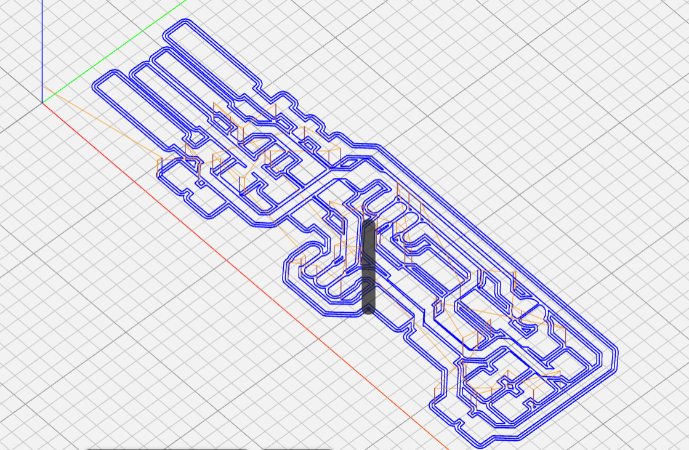
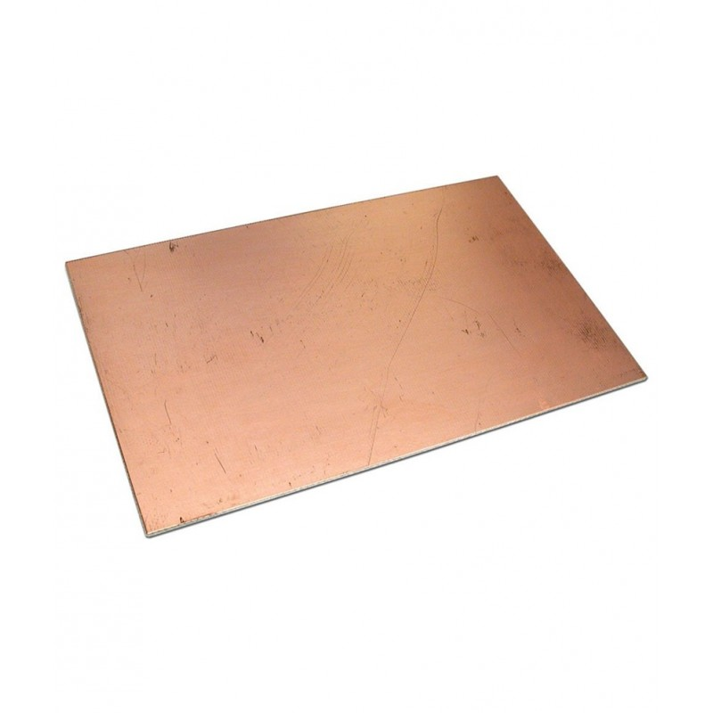

Electronics production
Back when creating circuits using breadboards, the boards can be too big to conceal in our artifacts, hence in this topic we learn how to create our own PCB boards.
Back when creating circuits using breadboards, the boards can be too big to conceal in our artifacts, hence in this topic we learn how to create our own PCB boards.
Our method of manufacturing PCB boards will be using a FR1 PCB.

It basically has a thin layer of copper on Phenolic paper, where we will use a CNC machine to cut out the board and remove the copper layer to form the connections before soldering the electronics on.
First we learn how to manufacture a FabTinyISP from a png file schematic. We will need the board outline cutout and the traces.
After downloading the images we need to convert the images to g-code in order to give instructions to the CNC machine to cut. For this we used mods.
At the website, right click then select programs > Open server program, under G-Code select "Mill 2D PCB png".

I next insert the png file name and set the configurations.
Starting with the traces, under "path to G-code", I used 50 for cut and plunge speed, jog height 2mm. Format is in mm and rate units in minutes. Under "mill rater 2D, tool diameter = 0.4, cut depth = 0.05 and offset number = 3.
.png)
I then click calculate. A separate page will open, showing the results. I then download the g-code file.
 "
"
I then insert the outline image, reconfigured the values and saved the G-code.
.png)
.png)
To evaluate the G-code, you can upload the file on ncviewer.com.
.png)
{kind=link}
{kind=link}